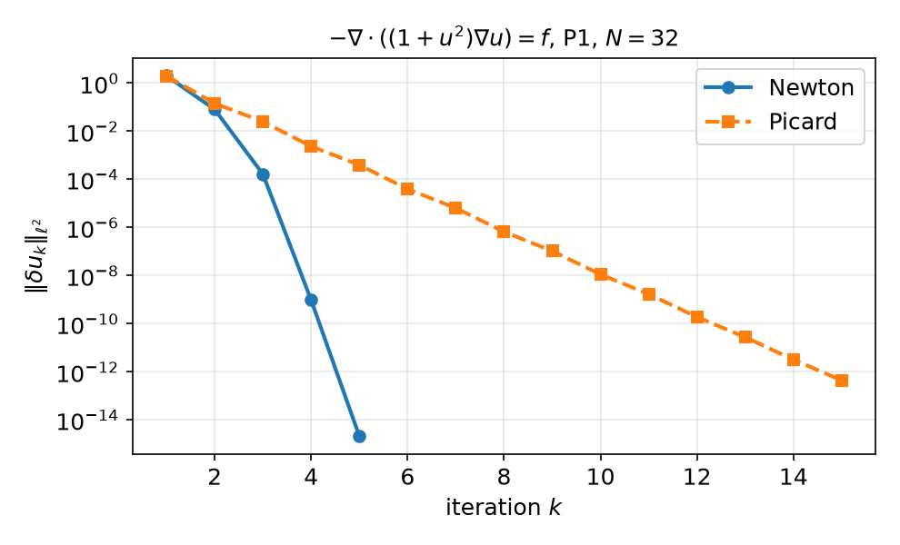

AI-based Materials and Process Simulation I
Week 08 — Nonlinear Problems I: Residual Form · Gâteaux Derivative · Newton’s Method by Hand · Picard Iteration · Project Proposal
Process Systems Laboratory
Department of Chemical and Biomolecular Engineering, SeoulTech
Today
| Part | Topic | Time |
|---|---|---|
| Midterm | Weeks 1–7, closed-AI | 90 min |
| A | Theory — residual form, Gâteaux derivative, Newton’s method, Picard iteration | 35 min |
| B | Newton by hand in DOLFINx — ufl.derivative, the update loop, what goes wrong |
30 min |
| C | The term project — scope, proposal, assessment | 15 min |
| D | LLM pitfalls with nonlinear solvers | 10 min |
Lab notebook: W08_lab.ipynb · Assignment: project proposal W08_project_proposal.ipynb (due before Week 9) · Week 9: SNES, line search, continuation, HW8
Where we are
Weeks 1–7: linear problems b(u,v)=F(v) — one linear solve, Lax–Milgram, Céa, rates.
Most process models are nonlinear:
| Model | Nonlinearity |
|---|---|
| heat conduction with k(T) | -\nabla\cdot(k(T)\nabla T)=Q |
| power-law (non-Newtonian) flow | viscosity \mu(|\nabla u|) |
| reaction–diffusion | source r(u), e.g. -\Delta u+u^3=f or Arrhenius e^{-E/RT} |
| Navier–Stokes | convection (\mathbf u\cdot\nabla)\mathbf u |
Plan: write the problem as F(u;v)=0, linearise it (Gâteaux derivative), solve a sequence of linear problems — each one exactly the machinery of Weeks 5–7.
Part A — Newton’s Method in Function Space
§A1 The model problem and its residual
-\nabla\cdot\bigl(q(u)\nabla u\bigr)=f\ \text{ in }\Omega,\qquad u=g\ \text{ on }\partial\Omega,\qquad q(u)=1+u^2 .
Weak form: find u\in H^1, u=g on \partial\Omega, with F(u;v):=\int_\Omega q(u)\,\nabla u\cdot\nabla v\,dx-\int_\Omega fv\,dx=0\qquad\forall v\in H^1_0 . F is linear in v, nonlinear in u. There is no bilinear form, so Lax–Milgram does not apply directly.
- Discretely: \mathbf F(\mathbf u)=\mathbf 0 with F_i(\mathbf u)=F(u_h;\phi_i) — N nonlinear equations in N unknowns.
- In UFL the residual is written with a
fem.Functionuh(not aTrialFunction):F = q(uh) * inner(grad(uh), grad(v)) * dx - f * v * dx.
§A2 The Gâteaux derivative
Definition — Gâteaux (directional) derivative
J(u;w,v):=\frac{d}{d\varepsilon}F(u+\varepsilon w;v)\Big|_{\varepsilon=0} — linear in the direction w and in v: a bilinear form, the linearisation of F at u.
For q(u)=1+u^2, with \frac{d}{d\varepsilon}q(u+\varepsilon w)|_0=q'(u)w=2uw: J(u;w,v)=\int_\Omega q(u)\,\nabla w\cdot\nabla v\,dx+\int_\Omega q'(u)\,w\,\nabla u\cdot\nabla v\,dx . The second term is the one that is easy to forget.
| by hand | UFL | |
|---|---|---|
| residual | F(u;v) | F = ... with uh a Function |
| Jacobian | J(u;w,v) | J = ufl.derivative(F, uh, w) with w = TrialFunction(V) |
ufl.derivative differentiates the form symbolically — no hand algebra, no forgotten terms.
§A3 Newton’s method
Linearise at the current iterate u^k: F(u^k+\delta;v)\approx F(u^k;v)+J(u^k;\delta,v). Set the right side to zero:
Newton’s method
Given u^0 with u^0=g on \partial\Omega, repeat: find \delta u\in V_0 with J(u^k;\delta u,v)=F(u^k;v)\quad\forall v\in V_0,\qquad u^{k+1}=u^k-\delta u, until \|\delta u\| (or \|F(u^k)\|) is below a tolerance.
- Each step is a linear variational problem with the bilinear form J(u^k;\cdot,\cdot) — Weeks 5–6.
- The correction vanishes on \Gamma_D: the boundary values are put into u^0 once, then \delta u\in V_0 (homogeneous Dirichlet for \delta u).
- In matrices: J(\mathbf u^k)\,\delta\mathbf u=\mathbf F(\mathbf u^k), \;J_{ij}=J(u^k;\phi_j,\phi_i)=\partial F_i/\partial u_j.
§A4 Convergence: quadratic vs linear
Theorem — local quadratic convergence
If F(u^*)=0, J(u^*) is invertible and J is Lipschitz near u^*, then for u^0 close enough to u^* \|u^{k+1}-u^*\|\le C\,\|u^k-u^*\|^2 .

Picard: freeze the coefficient, \int q(u^k)\nabla u^{k+1}\cdot\nabla v=\int fv — Newton without the q'(u) term; linear convergence.
u=1+\sin(\pi x)y^2, P1, N=32, initial guess = solution with q=1:
- Newton: 5 iterations; \|\delta u_{k+1}\|/\|\delta u_k\|^2=0.020,\ 0.026,\ 0.035
- Picard: 15 iterations; \|\delta u_{k+1}\|/\|\delta u_k\|\approx0.1–0.17
- Both reach the same u_h (L^2 error 3.78\times10^{-4})
§A5 What the nonlinear solver does not change
The discretisation error is a property of u_h, not of the iteration:
| Pk, N=8\to64 | Newton iterations | L^2 errors | rates |
|---|---|---|---|
| P1 | 5, 5, 5, 5 | 5.9e-3 → 9.5e-5 | 1.98, 1.99, 2.00 |
| P2 | 5, 5, 5, 5 | 2.0e-4 → 3.9e-7 | 3.01, 3.00, 3.00 |
- Mesh independence: the number of Newton iterations does not grow with N — Newton converges in function space, the discretisations inherit it.
- MMS works unchanged: choose \tilde u, compute f=-\nabla\cdot(q(\tilde u)\nabla\tilde u) with UFL, check the rates — once the iteration has converged.
- Stop on \|\delta u\| or \|F\| far below the discretisation error — and check that it stopped because it converged.
§A6 The initial guess
Newton is only locally convergent. P1, N=32:
| u^0 | iterations | \|\delta u\| history |
|---|---|---|
| solution of the linear problem with q=1 | 5 | 2.0, 8.0e-2, 1.6e-4, 9.6e-10, 2.1e-15 |
| g on the boundary, 0 inside | 8 | 62, 17, 6.6, 1.5, 0.11, 9.3e-4, 9.3e-8, 2.5e-15 |
Strategies (Week 9): a linear(ised) problem as the first guess; continuation in a parameter (load, Reynolds number, q); damping / line search u^{k+1}=u^k-\alpha\,\delta u, 0<\alpha\le1. PETSc SNES provides line searches and convergence tests.
Part B — Newton by Hand in DOLFINx
§B1 Residual and Jacobian in UFL
uh = fem.Function(V) # the unknown: a Function, not a TrialFunction
v, w = ufl.TestFunction(V), ufl.TrialFunction(V)
q = lambda u: 1 + u**2
F = q(uh) * ufl.inner(ufl.grad(uh), ufl.grad(v)) * ufl.dx - f * v * ufl.dx
J = ufl.derivative(F, uh, w) # Gâteaux derivative in the direction w
Fc, Jc = fem.form(F), fem.form(J) # compiled once; they read uh's current values
bc_u = fem.dirichletbc(g, dofs) # boundary values for u^0
bc0 = fem.dirichletbc(0.0, dofs, V) # the correction is zero on the boundary
uh.x.array[:] = initial_guess.x.array # must satisfy u = g on the boundaryThe compiled forms keep a reference to uh: change uh.x.array, re-assemble, and you get F(u^{k+1}) and J(u^{k+1}) — no new forms inside the loop.
§B2 The Newton loop
A, b = fem.petsc.create_matrix(Jc), fem.petsc.create_vector(V)
ksp = PETSc.KSP().create(comm); ksp.setOperators(A); ksp.setType("preonly"); ksp.getPC().setType("lu")
du = fem.Function(V)
for k in range(max_it):
A.zeroEntries(); assemble_matrix(A, Jc, bcs=[bc0]); A.assemble() # J(u^k)
with b.localForm() as bl: bl.set(0.0)
assemble_vector(b, Fc) # F(u^k)
apply_lifting(b, [Jc], bcs=[[bc0]])
b.ghostUpdate(addv=PETSc.InsertMode.ADD, mode=PETSc.ScatterMode.REVERSE)
set_bc(b, [bc0])
ksp.solve(b, du.x.petsc_vec); du.x.scatter_forward() # J du = F
uh.x.array[:] -= du.x.array # u^{k+1} = u^k - du
if du.x.petsc_vec.norm() < tol: # collective: all ranks
break
else:
raise RuntimeError("Newton did not converge")Re-use A and b (zero them each step). The sign convention J\delta u=F, u\leftarrow u-\delta u is the one of DOLFINx’s own Newton solvers.
§B3 A parallel-only sign error
Tempting variant: assemble F, then b.scale(-1) to solve J\delta u=-F and add \delta u:
P1, N=16, -np 2: \|\delta u\| = 0.48, 1.1, 1.3, 1.6, 2.3, 4.6, 12, 18, 20, 18, 290, 39 000 — divergence. With -np 1 the same code converges (no ghosts). A PETSc Vec operation acts on the owned part; ghost entries are a separate local buffer.
Rule (Weeks 5–6, again): finish the vector — assemble, lift, ghostUpdate, set_bc — before any vector arithmetic; then test with -np 2.
§B4 Checks for a Newton solver
| Check | Expected | Catches |
|---|---|---|
| \|\delta u_k\| history | quadratic: \|\delta u_{k+1}\|/\|\delta u_k\|^2\approx const | wrong Jacobian (→ linear) |
| Taylor test \|F(u+\varepsilon w)-F(u)-\varepsilon J(u)w\| | O(\varepsilon^2); measured order 2.00 (exact J) vs 1.00 (q'(u) term dropped) | hand-written Jacobians |
| iterations vs N | constant | mesh-dependent stopping criteria |
| MMS rates of the converged u_h | k+1 / k | everything else (Weeks 5–7) |
-np 1 vs -np 2 |
identical histories | ghost/sign errors (§B3) |
Week 9: the same with NonlinearProblem (PETSc SNES: newtonls, line search, getConvergedReason()), continuation, and HW8 (nonlinear MMS).
Part C — The Term Project
§C1 Scope and milestones
40 % of the grade: proposal 5 · final report and code 25 · final presentation 10 (Week 16; no final exam).
One nonlinear or flow problem, ideally from your own research. You must:
- derive the weak form and argue well-posedness (or explain why the standard argument fails),
- implement it in Colab with DOLFINx 0.11 (
%%fenicsx, runs with-np 2), - verify it: MMS with predicted rates and a benchmark or an analytical/physical check,
- document the LLM workflow: what was generated, which errors were found, how each part was verified.
Six prepared topics (projects/index.html): A PEM fuel-cell cathode · B packed-bed thermal runaway · C buoyant vertical bed · D Nernst–Planck electrochemistry · E ignition–extinction by arclength continuation · F catalyst-activity map by adjoint optimisation — or your own topic, e.g. power-law channel flow, natural convection, heat conduction with k(T).
§C2 The proposal (due before Week 9)
W08_project_proposal.ipynb — about two pages plus one running cell:
| Section | What we look for |
|---|---|
| Problem | physical setting, governing equations, parameters with units, dimensionless groups |
| Weak form | spaces, boundary conditions (essential/natural), the nonlinear residual F(u;v) |
| Analysis plan | which theorem applies (Lax–Milgram for the linearisation? monotone operators? inf-sup?) |
| Verification plan | manufactured solution and predicted rates; benchmark/reference data with a citation |
| Smoke test | one %%fenicsx -np 2 cell that builds the mesh and solves a linear simplification |
| LLM plan and risks | what you will delegate, how you will check it; what could fail and the fallback |
The proposal is graded for feasibility and verifiability, not ambition. A small problem done and verified beats a large one that is not.
Part D — LLMs and Nonlinear Solvers · Assignment
§D1 Where LLM-generated Newton code goes wrong
| Kind | What it looks like | Detection |
|---|---|---|
| Stale API | NewtonSolver(comm, NonlinearProblem(...)) (0.9 style); missing petsc_options_prefix |
deprecation warning + AttributeError: ... no attribute 'a'; TypeError |
| Trial vs Function | residual written with a TrialFunction instead of a Function |
ArityMismatch: Applying nonlinear operator Power ... at fem.form |
| Hand Jacobian | q'(u) term dropped or wrong | linear instead of quadratic convergence; Taylor test |
| Boundary values | non-zero BC applied to the correction \delta u in every step | boundary values drift; solution wrong at \Gamma_D |
| Stopping | fixed number of iterations; no convergence check; absolute tolerance on a scaled problem | print the history; check the reason |
| Parallel | b.scale(-1) before ghostUpdate; stopping test on a per-rank norm |
-np 1 vs -np 2 |
Assignment — project proposal, due before the Week 9 lecture
Project proposal (5 % of the grade)
- Fill in
W08_project_proposal.ipynb: problem, weak form, analysis plan, verification plan, smoke test, LLM plan, risks, timeline - The smoke-test cell must run with
-np 2on Colab - Include the AI-usage log
- One page of feedback comes back in Week 9
No weekly homework this week. HW8 (nonlinear MMS with SNES) is set in Week 9.
The lab W08_lab.ipynb (Newton by hand) is the basis for HW8 — finish it before Week 9.
Summary
| Concept | Key idea | DOLFINx |
|---|---|---|
| Residual form | F(u;v)=0, linear in v, nonlinear in u | uh is a Function |
| Gâteaux derivative | J(u;w,v)=\frac d{d\varepsilon}F(u+\varepsilon w;v)|_0 | ufl.derivative(F, uh, w) |
| Newton | J(u^k)\delta u=F(u^k), u^{k+1}=u^k-\delta u, \delta u=0 on \Gamma_D | assemble, lift, ghostUpdate, set_bc, solve |
| Convergence | quadratic near the solution; mesh-independent iteration count | \|\delta u\| history |
| Picard | frozen coefficient; linear convergence | drop the q'(u) term |
| Verification | MMS rates of the converged u_h; -np 1 vs -np 2 |
Weeks 5–7 tools |
Next week — Nonlinear problems II
NonlinearProblem and PETSc SNES, line search, continuation, convergence diagnostics; HW8 nonlinear MMS.